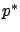
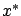
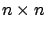

We will now derive a differential equation that the matrix  defined in (6.10) must satisfy. First, differentiate both sides of the equality (6.6) to obtain
defined in (6.10) must satisfy. First, differentiate both sides of the equality (6.6) to obtain
Next, expand
Applying (6.6) to eliminate

and dividing by 2, we conclude that the equation
is the state of the linear time-varying system given by (6.1) and (6.12) whose transition matrix is nonsingular,
It is interesting to compare the two descriptions that we now have for  . The RDE (6.14) is a quadratic matrix differential equation. The formula (6.10), on the other hand, is in terms of the transition matrix
. The RDE (6.14) is a quadratic matrix differential equation. The formula (6.10), on the other hand, is in terms of the transition matrix  which satisfies a linear matrix differential equation
which satisfies a linear matrix differential equation
 but has size
but has size
 (while
(while  is
is

). Ignoring the computational effort involved in computing the matrix inverse in (6.10), we can say that by passing from (6.10) to (6.14) we reduced in half the size of the matrix to be solved for, but traded a linear differential equation for a quadratic one. Actually, if we prefer matrix differential equations that are linear rather than quadratic, it is possible to compute
The idea of reducing a quadratic differential equation to a linear one of twice the size is in fact not new to us; we already saw it in Section 2.6.2 in the context of deriving second-order sufficient conditions for optimality in calculus of variations. In the single-degree-of-freedom case, we passed from the first-order quadratic differential equation (2.64) to the second-order linear differential equation (2.67) via the substitution (2.66). In the multiple-degrees-of-freedom setting, scalar variables need to be replaced by matrices but a similar transformation can be applied, as we stated (without including the derivations) at the end of Section 2.6.2. Associating the matrix  there with the matrix
there with the matrix  here, the reader will readily see the correspondence between that earlier construction and the one given in Exercise 6.1.
here, the reader will readily see the correspondence between that earlier construction and the one given in Exercise 6.1.
The outcome of applying the necessary conditions of the maximum principle to the LQR problem can now be summarized as follows: a unique candidate for an optimal control is given by the linear feedback law (6.12), where the matrix  satisfies the RDE (6.14)
and the boundary condition (6.11). This is as far as the maximum principle can take us; we need to employ other tools for investigating whether
satisfies the RDE (6.14)
and the boundary condition (6.11). This is as far as the maximum principle can take us; we need to employ other tools for investigating whether  exists for all
exists for all  and whether the control (6.12) is indeed optimal.
and whether the control (6.12) is indeed optimal.